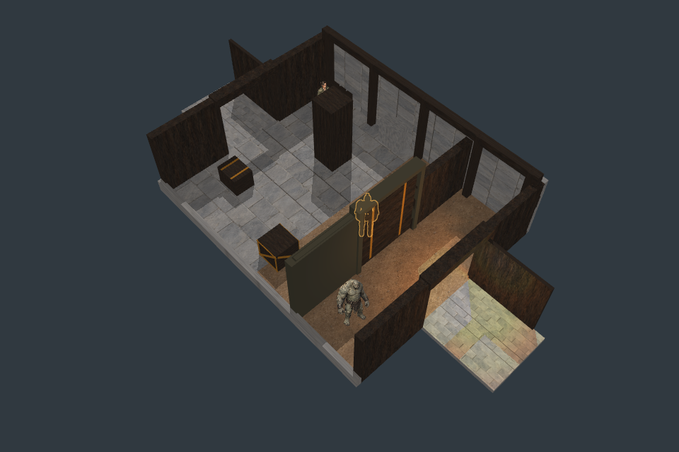
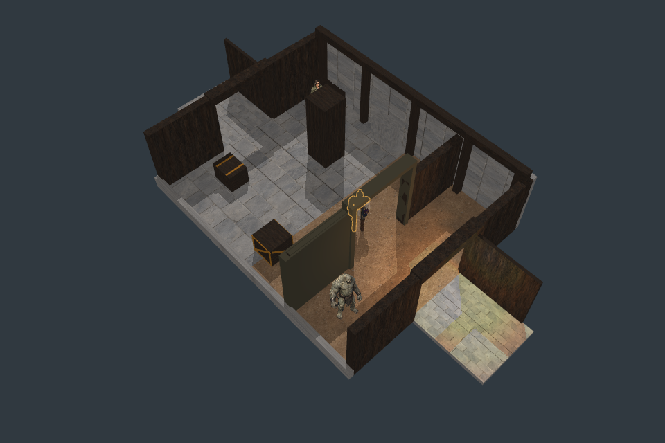
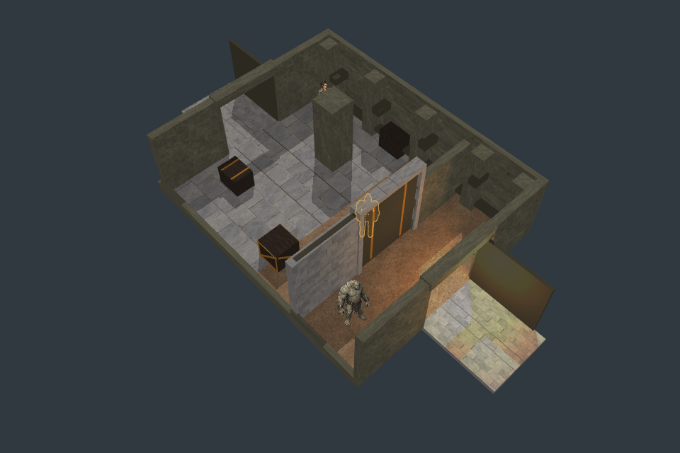
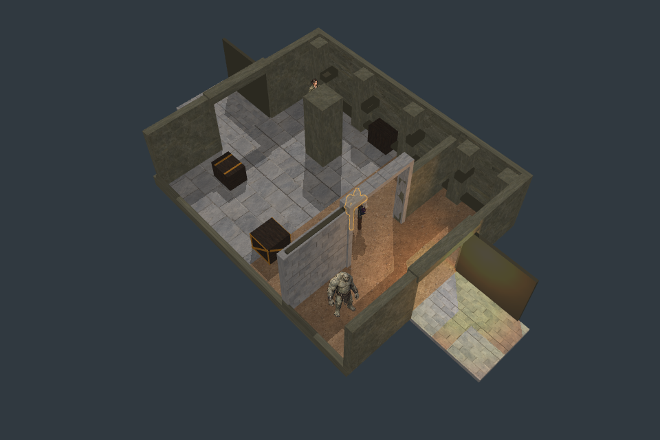

3.2 m clear opening for the2.7 m monster.35 headless checks,7,800 source geometry locations,1,320 shadow samples and672 visibility samples pass. Full art remains unqualified.




The old2.5 m lintel remains a failing control; a3.21 m actor still fails the taller opening. Build1's240 structural pixel failures are preserved; build2 removes overlapping jamb/rail joints without relaxing ID tolerances.
26 runtime actor outcomes pass across both factions. Monster motion/art remains a static fixture. Local composition p95 24.3 ms; videos do not prove60 fps or minimum-hardware performance.
Next: portal timber/stone/reservoir materials, preserving geometry and gameplay. Godot shipping target; Pixi harness. Report · Live test (local server required) · Preserved overlap build